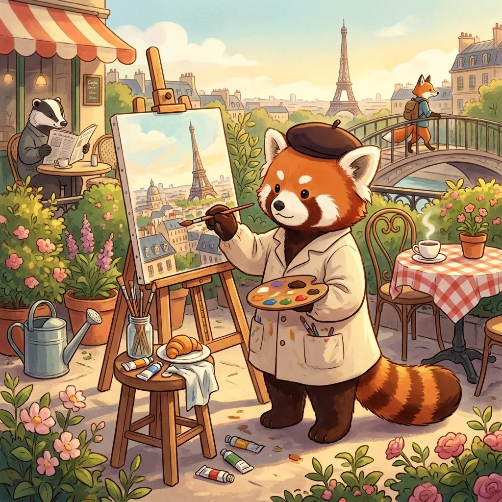
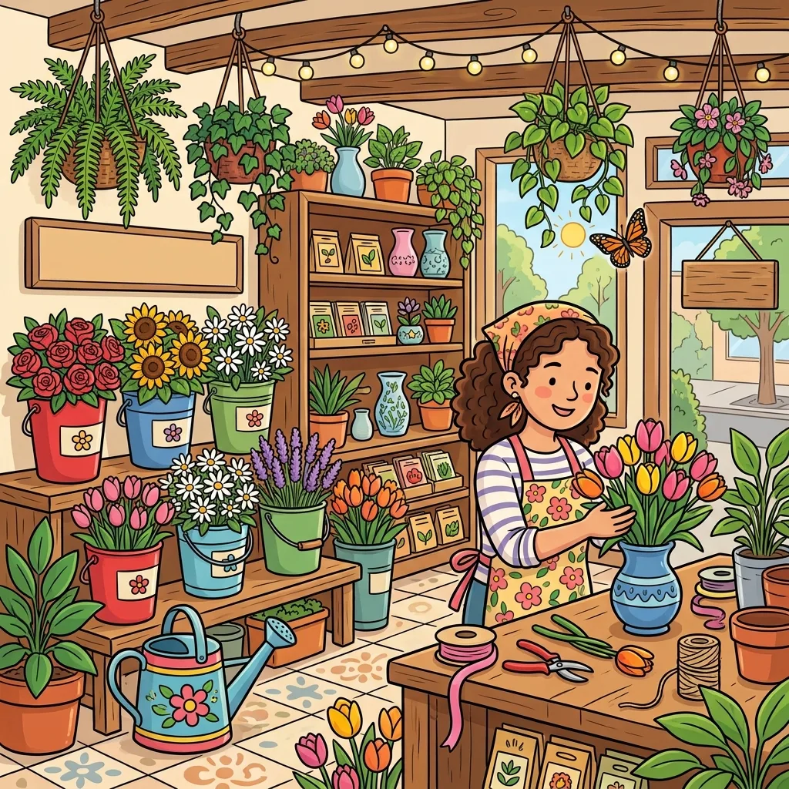

Printable Activities for Adults with Disabilities: Respectful, Free, and Actually Engaging
Anyone who plans activities for adults with intellectual or developmental disabilities knows the materials problem: search for "easy printable activities" and the results are covered in cartoon ABCs and nursery artwork. Handing a 45-year-old a preschool worksheet isn't programming, it's an indignity — and participants know it instantly. The bar that matters: adjust the difficulty, never the dignity. This guide is built around that bar.

Why age-respectful materials matter
Materials communicate respect before any activity starts. An adult who is handed childish pages disengages — not because the task is wrong, but because the message is. The practical test for any printable: would this page look normal on an adult's kitchen table? Crosswords pass. Sudoku passes. A well-drawn spot-the-difference scene passes — the format appears in airline magazines and newspapers, not just children's menus. Alphabet tracing does not pass, whatever the skill level.
Choosing difficulty without being patronizing
Spot-the-difference has a rare property for mixed-ability groups: difficulty lives in settings, not in the artwork's age register. The same dignified scene can be generated with four bold differences or twelve subtle ones — so a participant working at an easier level holds a page that looks identical in style to their neighbor's harder one. Nobody is holding "the baby version." That single property solves the most awkward problem in group programming. (Occupational therapists grade the format the same way — the dials are laid out in our OT visual perception guide.)
Group sessions vs. independent quiet time
For groups: print the same puzzle for everyone and run it as a relaxed table activity — first table to find everything wins, or cooperative mode where each find is called out and everyone circles it (a natural communication prompt: "where? describe it!"). For independent time: a personal folder with a few puzzles at the right level plus the answer key builds genuine autonomy — the participant can check their own work, which is a quietly big deal for adults used to being checked by others. The folder system from our seniors & care homes guide transfers directly.
Adapting for motor and vision differences
- Large print is the default, not the exception. Print one image per page (two pages per puzzle) rather than shrinking both onto one sheet.
- High contrast helps low vision: bold-line cartoon scenes outperform photographic ones; avoid pastel-on-pastel.
- Motor adaptations: accept pointing or verbal answers instead of circling; chunky dry-erase markers on sleeved pages beat pencils for grip; a clipboard stops the page-chasing problem.
- Pace belongs to the participant: no timers unless the group asks for the race version. The puzzle has a natural finish line already.
Building the weekly rotation
Staleness kills programs. A workable weekly shape: Monday — group puzzle table (same pair for all, social mode); Wednesday — themed set matching the season or an outing (garden scenes for gardening week); Friday — choice day: puzzle folder, coloring (a finished spot-the-difference doubles as a coloring page), or the head-to-head race for the competitive contingent. Because generated puzzles are unlimited and always new, the rotation costs ten minutes of printing a week and never repeats a page — the answer keys mean any staff member or volunteer can run the table without prep.

Unlimited free puzzles with dignified artwork — set the difficulty per person, print large, answer keys on their own page.
Open the free generator
FAQ
What activities are good for adults with developmental disabilities? The ones that respect age while fitting ability: puzzle tables (spot-the-difference, matching, simple crosswords), art and coloring with adult subjects, music and reminiscence sessions, cooking tasks broken into steps, and games with adjustable difficulty. The common thread is real choice and materials that look like they belong to an adult.
Where do these fit for older adults or memory care? Same principle, different context — our dementia care guide covers stage-based difficulty, and the adult brain games guide handles the general-population version of the same daily-puzzle idea.